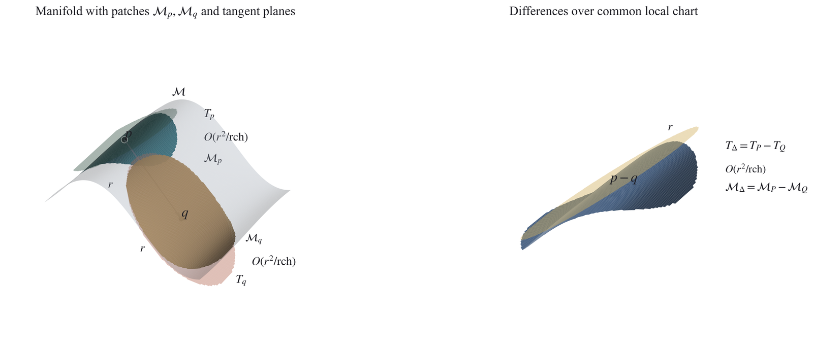
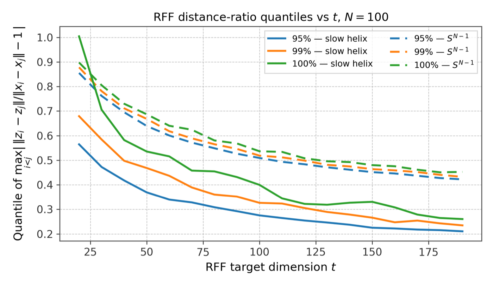
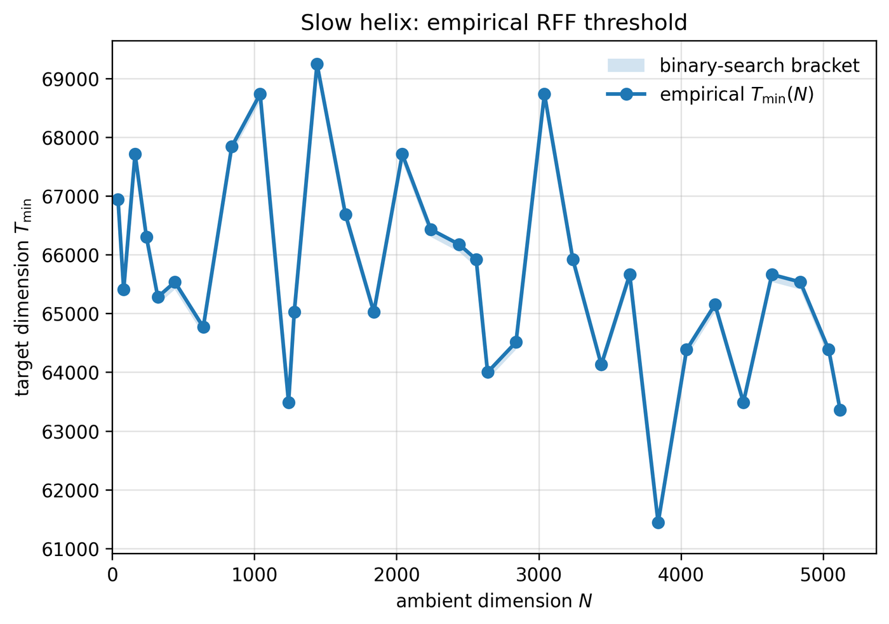

The Gaussian kernel is a widely used similarity measure that captures nonlinear relationships in data, and it gives rise to the Gaussian kernel distance, with applications in kernel PCA, spectral clustering and more. Computing these distances between many pairs of points can be computationally prohibitive.
What are random Fourier features?
The starting point is a classical identity: the Gaussian is its own Fourier transform, so it can be written as an average of cosines with Gaussian random frequencies,
e−x²/2 = E[ cos(ωx) ], where ω ∼ N(0, 1).
In ℝN the same identity gives the Gaussian kernel itself: k(x, y) = e−‖x−y‖²/2 = E[ cos⟨ω, x − y⟩ ] with ω ∼ N(0, IN). Rahimi and Recht's idea is to replace the expectation by an average over t random draws ω₁, …, ωt. Since cos(a − b) = cos a · cos b + sin a · sin b, that average is an ordinary inner product of the feature vectors
z(x) = (1/√t) · ( cos⟨ω₁, x⟩, sin⟨ω₁, x⟩, …, cos⟨ωt, x⟩, sin⟨ωt, x⟩ ), so that ⟨z(x), z(y)⟩ ≈ k(x, y).
These are the random Fourier features. They turn an expensive nonlinear kernel into a plain Euclidean computation in 2t dimensions: the kernel distance √(2 − 2k(x, y)) becomes the ordinary distance ‖z(x) − z(y)‖, up to a random error. The question is how large t has to be for that error to be small for all pairs of points at once.
Our result
Using the Random Fourier Features (RFF) method of Rahimi and Recht, Chen and Phillips proved that for points in a ball of radius R, a number of random features depending on R suffices to preserve all pairwise Gaussian kernel distances up to a (1 ± ε) factor. For data on an arbitrary submanifold ℳ ⊂ ℝN with positive reach and intrinsic dimension d, we establish the first uniform, relative-error embedding theorem for Gaussian kernel distances: roughly
O( (d² / ε²) · (log N + log (1/εδ)) ) random Fourier features
are enough to guarantee, with probability 1 − δ, that the kernel distance between every pair of points on the manifold is preserved up to relative error ε. The bound depends only logarithmically on the ambient dimension and on manifold parameters such as volume and reach, and needs no bound on the ambient radius.
Proof idea
The Gaussian kernel distance is not Lipschitz near the origin, so the proof uses a relative-Lipschitz property instead and exploits properties of tangent spaces to control relative errors on the manifold. We show that the ratio of the random Fourier feature distance to the exact kernel distance concentrates near one and has a bounded derivative; a Taylor expansion then gives uniform control over small balls in the manifold, and covering the manifold with such balls and taking a union bound yields the global guarantee. A similar result holds for sets with bounded Gaussian width.

Persistent homology is preserved
Under the same RFF embedding, the persistent homology of the manifold is preserved: the weighted Čech and Rips filtrations built with the Gaussian Kernel Power Distance (GKPD) are (1 ± ε⋆)-interleaved, where ε⋆ incorporates both the distance distortion and the approximation of the kernel weights. This extends the point-cloud interleaving result of Boissonnat and Dutta to the continuous manifold setting.
Algorithmic consequences
- Kernel k-means — Euclidean k-means costs on the embedded points (1 ± 2ε)-approximate the true RKHS clustering cost.
- Kernel distance matching — the same cost-transfer argument applies to shape and point-cloud matching under Gaussian kernel-distance costs.
- Kernel nearest-neighbour search — Euclidean nearest-neighbour search on the embedded points gives a (1 + O(ε))-approximate nearest neighbour under the kernel distance.
- Kernel SVM — the embedding preserves the large-margin geometry up to (1 ± O(ε)), so a kernel SVM can be replaced by a linear SVM trained on O(nt) random features instead of an O(n²) Gram matrix.
Empirical validation
We sample 1,000 points on a “slow helix” — a one-dimensional curve in ℝN with N = 100 — and on the sphere S99. For each target dimension t we draw 200 independent RFF projections, record the maximum pairwise distance-ratio error, and plot the 95th, 99th and 100th percentiles of that error across seeds.

In a second experiment we grow the ambient dimension N of the slow helix and find, for each N, the smallest target dimension at which the 95th percentile of the maximum relative error is at most 10−2. The required dimension does not grow linearly with N, as an ambient-dimensional bound would suggest: for low-dimensional data in a high-dimensional space, the number of features needed is governed by the intrinsic geometry.

Paper: S. Dutta, K. Dutta,
Low-Dimensional Embeddings for Gaussian Kernels on Manifolds, submitted to
SODA 2027 · arXiv:2609.15179
Code: rff-manifold-demo